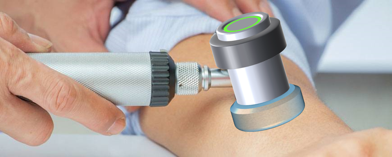

MicroElastic Ultrasound Systems is developing a handheld device that quantifies the elasticity of skin at the touch of a button. Our proprietary technology, developed at Duke University, uses ultrasound to locally vibrate tissue and measure the response in order to directly and noninvasively characterize tissue elastic properties. Skin elasticity is both important for planning, guiding, and evaluating procedures and treatments in aesthetic dermatology and crucial for tracking and managing life-threatening chronic conditions like Graft-Versus-Host-Disease, yet existing methods are subjective, qualitative, or unreliable, causing the NIH to declare that “there is an urgent need for the development of more quantifiable and reproducible measurements”. Early assessment and active feedback speeds and tailors treatments while reducing discomfort and other complications, reducing costs and improving outcomes. MicroElastic is taking its functional prototype into clinical testing and developing its first commercial product via funding from an NIH STTR grant and is negotiating a strategic partnership in the aesthetic space for application to anti-aging procedures. MicroElastic will be seeking funding in 2018 to complete development and regulatory approval as a class II device under the 510(k) pathway.

For inquiries, please email info@microelastic.com
MicroElastic is always interested in exceptional talent. To inquire about joining the team, please email jobs@microelastic.com
Chief Executive Officer
Ultrasound expert, passionate innovator. Founded MicroElastic to deliver customer-focused technology solutions to enable precision medicine.
peter.hollender@microelastic.com
Chief Scientific Officer
Scientist, engineer, and innovator. Driven by bringing advanced ultrasound theory into practical application.
Chief Technical Officer
Software and Biomedical Engineer. Cloud-computing evangelist. Passionate about delivering scalable software solutions for challenging healthcare problems.
Chief Financial Officer
Results-oriented financial executive with more than 30 years of public accounting, corporate finance, and leadership experience
Advisor
Serial Entrepreneur and Ultrasound device commercialization expert. Founder of PocketSonics and HemoSonics. Director of Entrepreneurial Development for Pratt School of Engineering at Duke.
Chief Scientific Advisor
Prolific researcher, ARFI Co-Inventor with 4000+ Citations and 13 patents. Professor of the Practice at Duke.
Chief Scientific Advisor
Medical Device Entrepreneur and Executive. Raised over $35M in Venture Capital. CEO of both Cardiosolutions and Kspine.
Advisor
Serial Entrepreneur and founder, Cronos Integrated Microsystems, Nexteme Thermal Solutions, Zenalux Biomedical. Professor of the Practice of Environmental Entrepreneurship and Innovation at Duke.
Dermatologist
Leading GVHD Researcher
Hepatologist
Leading NAFLD Researcher
Proven Collaboration